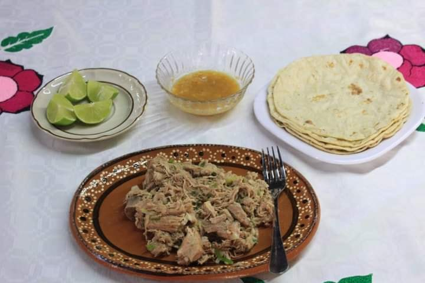
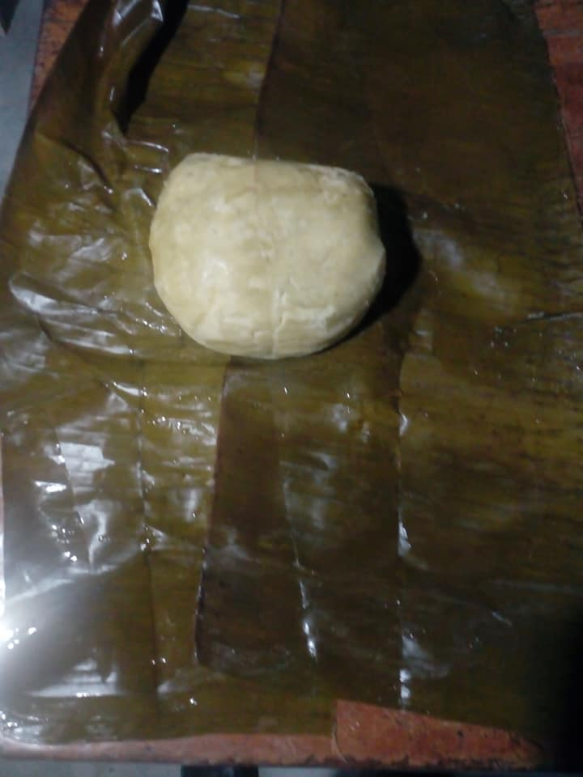

Recetas Tradicionales

TAXUGUWIH (Carnitas de cerdo)
Receta transmitida por generaciones.
Ingredientes:
- Carne de cerdo
- Manteca de puerco
- Cebollín
- Limón
- Ajo
- Sal al gusto

TETAMAH (Tamal de piedra)
Su nombre viene de "TE' (piedra) y TAMAH (tamal)".
Ingredientes:
- Maíz tierno
- Cal (nixtamalización)
- Hojas de plátano
- Hoja blanca
Cultura e Identidad
LA GASTRONOMÍA EN LA COCINA TRADICIONAL COMO REFERENTE CULTURAL E IDENTITARIO DEL PUEBLO DE ZARAGOZA, VERACRUZ, MEXICO.
La Gastronomía nahua de Xumuapan.
La gastronomía tradicional constituye un elemento de la identidad, cohesión social y distinción cultural.
De acuerdo con la Convención para la Salvaguardia del Patrimonio Cultural Inmaterial de la UNESCO, la gastronomía tradicional infunde “un sentimiento de identidad y continuidad”, reconocido por las comunidades, los grupos y en algunos casos, los individuos que lo transmiten de generación en generación y lo recrean en función de su entorno, su interacción con la naturaleza y su historia (UNESCO, 2016).
En este contexto, la Cocina Tradicional de Xumuapan forma parte de un conjunto de recetas del buen comer de los habitantes nahuas provenientes del pueblo de Oteapan que se asentaron en el “paraje denominado San Isidro Xumuapan a mediados del siglo XVII” (García de León, 1963).
La gastronomía del antiguo Xumuapan cuenta con una gran variedad de platillos originales y sus nombres están ligados a nuestra lengua materna de la variante conocida como Pipil. Entre los platillos más representativos se encuentran:
- Taxuguwih / Carnitas al estilo Xumuapan.
- Nexatuh / Carne de totola o guajolote en atole y acuyo.
- Nagatamah / Tamal de masa cocida.
- Elutamah / Tamal de elote.
- Ahayutamah u chiputamah / Tamal de frijol.
- Chipihtamah / Tamal de chipil.
- Xugutamah / Tamal agrio.
- Takualayu’ / Caldo de res.
- Piuayu’ / Caldo de gallina de rancho.
- Te’s taiswaixkah / Huevo de gallina de rancho cocido en hoja.
- Te’s tatemanah / Huevo de gallina de rancho cocido en agua.
- Te’s taamanah / Huevo de gallina de rancho en caldo con epazote.
- Tapihpi’ / Mojarra envuelto con acuyo.
- Pikadiyuh / Carne de cerdo en atole.
- Tupuhayu’ / Caldo de pescado.
- Tupuh tawatzah / Pescado asado.
- Chagali tasegih
- Taixkah naga’ / Carne asada.
- Kili’ / Quelite
- Chipili / Chipile
Dentro de esta gama de platillos y las tortillas hechas a mano y en metate cocinados todo a la leña, constituye un elemento básico en su proceso de preparación de nuestra alimentación así como su importancia cosmológica en nuestro quehacer cotidiano, considerado como alimento básico y fundamental en la cultura alimentaria de nuestros pueblos originarios desde la época prehispánica, por lo anterior el maíz ha sido un elemento fundamental de la cultura mesoamericana, así como un componente clave dentro de la dieta alimenticia como de su cosmovisión.
En el pueblo nahua de Xumuapan (Zaragoza) no es la excepción ya que las abuelas y abuelos de nuestra cultura trasmiten a través de su tradición oral todos estos elementos mencionados a continuación donde evidencian su importancia y papel que juega dentro de la gastronomía tradicional. El cultivo de maíz se da con la siembra, el cuidado y finalmente con la pixka o cosecha, donde en algunos casos se puede encontrar tres tipos de maíces con características muy específicas en el contexto de nuestra cosmovisión, estos son el Sinyopix, Kuchiluh y Kuyame’. Sinyopix (Sacerdote del maíz) y se caracteriza por ser una mazorca cubierta de granos con punta redondeada a estas mazorcas se le deja unas hojas que servirán para hacer un amarre que le permitirá estar colgado en el tapanco haciendo la función de cuidar el maíz de la cosecha del acecho del Kuyame’ o cochino que podría acabar con la cosecha y dejar sin alimento al campesino y su familia.
Kuchiluh o cuchillo, es una mazorca que se distingue por ser semejante a un cuchillo teniendo descubierto de granos el olote de la punta hasta la mitad de la mazorca en forma longitudinal y el resto cubierto es el mango o cacha del cuchillo. Es además el arma de Sinyopix que servirá como compañero de cuidanza del maíz y se coloca al lado de este. Por otro lado, la mazorca Kuyame’ o cochino representa a este animal el cual, uno de sus alimentos favoritos es el maíz razón por la cual se le separa inmediatamente de toda la cosecha evitando así que acabe con ella. Se caracteriza por tener la punta en forma de trompa de cochino con la boca abierta.
¡TASUHKAMATI PAH INUCHI / GRACIAS A TOD@S!
Publicación de Erasto Antonio Candelario
Gran artesano de Zaragoza Ver, 18 de septiembre de 2023